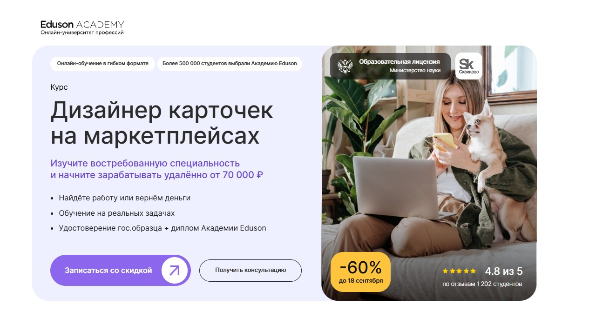
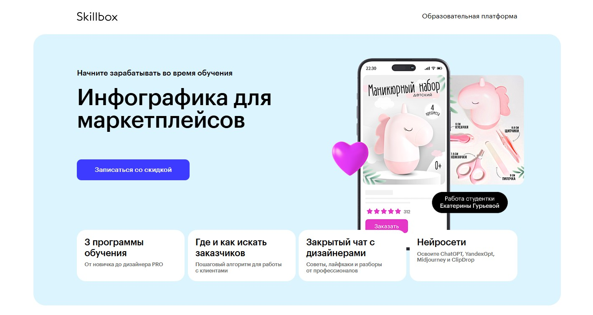
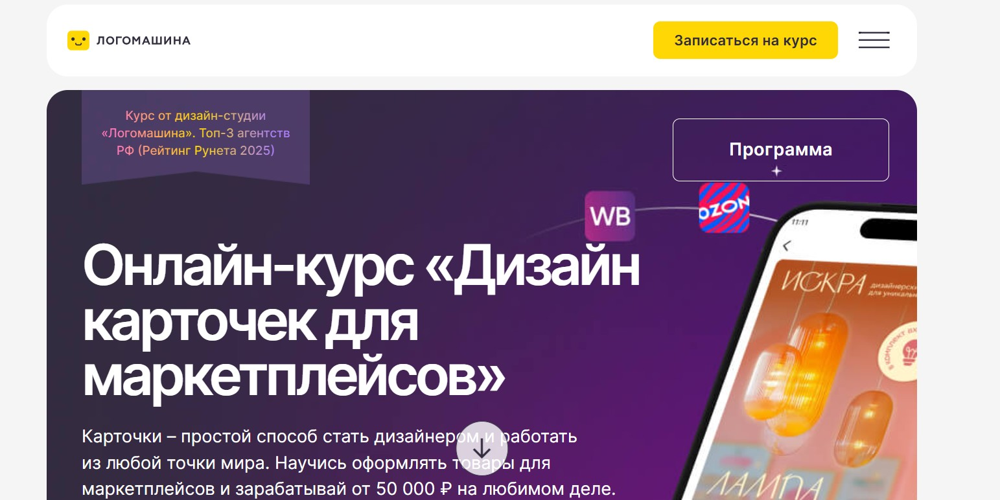
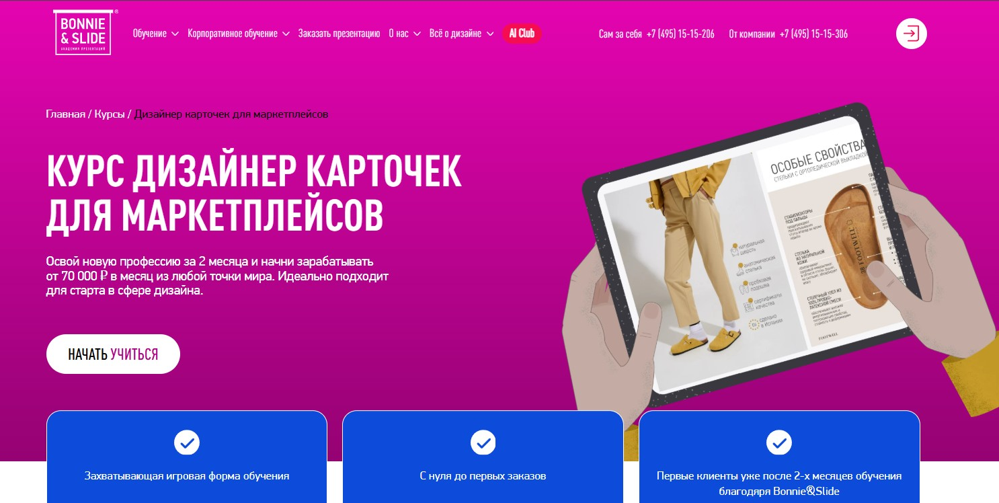
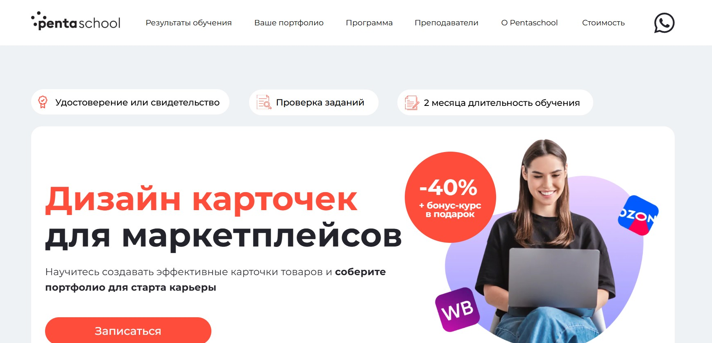
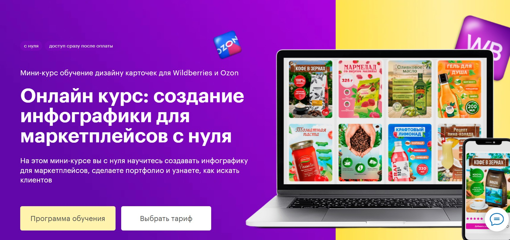
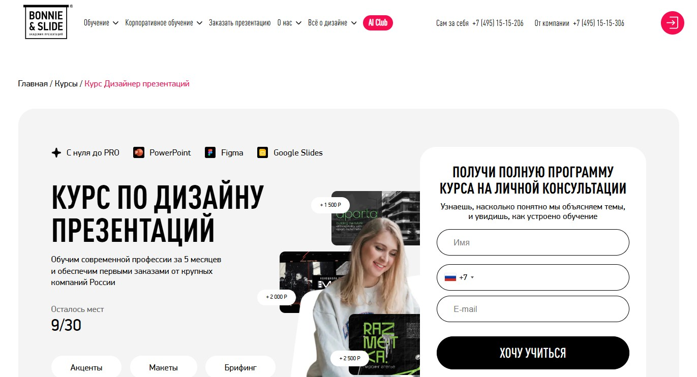
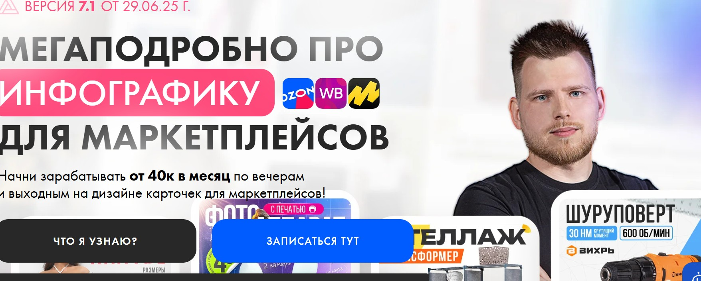

Лучшие курсы по созаднию карточек для маркетплейсов WB, OZON и других
| Место | Программа обучения | Сайт курса |
|---|---|---|
| 1 🥇 | Дизайнер карточек на маркетплейсах Академия Eduson |
Перейти |
| 2 🥈 | Курс по созданию инфографики для маркетплейсов Skillbox |
Перейти |
| 3 🥉 | Дизайн карточек для маркетплейсов Логомашина учит |
Перейти |
| 4 | Дизайнер карточек для маркетплейсов Bonnie&Slide |
Перейти |
| 5 | Дизайн карточек для маркетплейсов Pentaschool |
Перейти |
| 6 | Обучение дизайну карточек для маркетплейсов Школа Дмитрия Сугака |
Перейти |
| 7 | Курс по дизайну презентаций Bonnie & Slide |
Перейти |
| 8 | Обучение дизайну карточек для маркетплейсов Авторская школа Максима Басманова |
Перейти |
| 9 | Дизайнер карточек
5.0 Школа от эксперта по визуалу |
Перейти |
Дизайнер карточек на маркетплейсах – Академия Eduson

⭐ Рейтинг: 5.0
- Сайт: eduson.academy/designer-marketplace
- Полная стоимость: 3880 руб/мес при рассрочке, 9700 руб/мес со скидкой до 11 сентября. Возможен налоговый вычет — верните 13% от стоимости. Грант на обучение не предусмотрен.
- Рассрочка: Беспроцентная рассрочка на 12 месяцев — от 3880 руб/мес.
- Длительность: Прохождение за 1–2 месяца при нагрузке 7 часов в неделю.
- Документ: Удостоверение о повышении квалификации государственного образца и диплом Академии Eduson, подтвержденный «Сколково».
- Трудоустройство: Гарантия трудоустройства — если не найдете работу, вернут деньги. Помощь в создании портфолио и старт карьеры на фрилансе или в агентстве.
Особенности курса:
Обучение построено на реальных кейсах и практических задачах, что позволяет быстро освоить навыки, востребованные на рынке. Программа включает работу с графическими редакторами, основы UI, типографику, цвет и модульные сетки. Особое внимание уделено контенту для маркетплейсов: как создавать привлекательные карточки товаров, повышающие продажи. Уделяется время работе с нейросетями — инструментам, которые ускоряют процесс создания визуала. Доступ к материалам — навсегда, обновления — бесплатны. Студенты получают поддержку куратора 7 дней в неделю и консультацию эксперта в подарок.
Кратко о программе курса:
- Введение в профессию и рынок дизайна для онлайн-торговли.
- Ознакомление с графическими редакторами: работа в Photoshop и других инструментах.
- Композиция и модульные сетки — как правильно строить макет.
- Типографика: выбор шрифтов, работа с текстом в карточке товара.
- Цвет и UI: сочетание оттенков, создание удобного и понятного интерфейса.
- Дизайн коммуникаций: как передать смысл через визуальный контент.
- Создание рекламных креативов для продвижения.
- Особенности оформления контента под разные маркетплейсы, включая Wildberries.
- Применение нейросетей в дизайне — экономия времени и повышение эффективности.
- Подготовка к старту карьеры: поисковые алгоритмы, взаимодействие с заказчиками.
- Формирование портфолио — сбор и презентация работ.
- Итоговый проект: создание комплексной карточки товара с защитой перед экспертами.
Чему научитесь:
Создавать эффективные карточки товаров, привлекающие внимание покупателей и повышающие конверсию. Освоите графические редакторы, работу с цветом, типографикой и модульными сетками. Научитесь применять нейросети для ускорения процесса и соберете сильное портфолио для старта карьеры.
Преимущества и особенности:
- Доступ к курсу навсегда — учиться можно в удобное время, материалы обновляются бесплатно.
- Обучение на реальных задачах — каждое задание приближено к работе в агентстве или с заказчиками.
- Поддержка куратора 7 дней в неделю — можно задать вопрос и получить обратную связь в чате.
- Два диплома по окончании: государственное удостоверение и документ Академии с верификацией от «Сколково».
- Беспроцентная рассрочка на 12 месяцев — начать обучение сейчас, платить — удобными частями.
- Работа с нейросетями — актуальные навыки для автоматизации рутинных задач в дизайне.
- Гарантия возврата денег — если не найдете работу после курса, вернут оплату.
Читайте отзывы учеников:
Учащиеся хвалят понятную подачу материала, качественные видеоуроки и поддержку кураторов. Отмечают практико-ориентированность программы: сразу после обучения начинают брать заказы. Многие подчеркивают, что курс помог перейти на удалёнку и зарабатывать от 70 000 рублей уже на начальном уровне. Высокий рейтинг — 4,8 на основе более чем 1200 отзывов — подтверждает доверие студентов.
Курс по созданию инфографики для маркетплейсов — Skillbox

⭐ Рейтинг: 5.0
- Сайт: skillbox.ru/course/infographics-for-marketplaces/
- Полная стоимость: 4 970 ₽/мес с применением скидки. Возможен налоговый вычет до 13%. Обучение может оплатить работодатель.
- Рассрочка: 2 733 ₽/мес на 22 месяца, первый платёж — через 3 месяца, без переплат.
- Длительность: 3 месяца до первых результатов, 163 урока в программе.
- Документ: Сертификат установленного образца. Обучение проходит по государственной лицензии.
- Трудоустройство: Помощь в трудоустройстве — топовые студенты могут пройти практику в дизайн-студии Wildspace.Shop.
Особенности курса:
Программа охватывает все этапы создания продающей инфографики: от основ в Figma и Photoshop до анимации в After Effects и работе с нейросетями. Вы создадите от 2 до 7 уникальных карточек товаров, которые сразу можно добавить в портфолио. Обучение построено на практике — каждое задание приближено к реальным заказам. Курс обновлён в 2025 году и включает актуальные тренды. Участники получают доступ в закрытый чат с дизайнерами, где делятся лайфхаками, находят заказы и получают поддержку экспертов. Продолжительность доступа к материалам — навсегда.
Преподаватели курса:
-
Ярослав Твердов — арт-директор, более 6 лет опыта в графическом дизайне.
-
Евгений Трифонов — селлер на Wildberries и Ozon с оборотом более 378 млн рублей.
-
Михаил Орлов — графический и motion-дизайнер, эксперт по визуальному контенту.
-
Екатерина Воронина — арт-директор, специалист по карточкам для маркетплейсов.
-
Анастасия Журавлёва — более 13 лет в оформлении, опыт в обучении дизайнеров.
Кратко о программе курса:
- Основы визуального восприятия и принципы продающей инфографики.
- Работа в Figma — создание простых макетов и карточек для новичков.
- Photoshop — обработка изображений, создание сложной графики.
- After Effects — анимация визуала для повышения вовлечённости.
- Использование нейросетей: Midjourney, ChatGPT, YandexGPT, ClipDrop.
- Создание УТП, воронки слайдов, повышение продаж на 15–30%.
- Оценка эффективности контента, тестирование визуала, анализ конкурентов.
- Пошаговые инструкции по поиску заказов и работе с клиентами.
- Подготовка портфолио и работа с реальными кейсами.
- Чат с дизайнерами, обратная связь от экспертов, воркшопы.
Чему научитесь:
Научитесь создавать эффективную инфографику для маркетплейсов, работать с ключевыми графическими редакторами и использовать нейросети для ускорения процесса. Сможете зарабатывать на фрилансе или продвигать собственные товары на Wildberries и Ozon.
Преимущества и особенности:
- Освоение нейросетей — экономия времени на создание текстов и изображений для карточек.
- Доступ к закрытому комьюнити дизайнеров — обмен опытом, поддержка, поиск заказов.
- Построение портфолио из 2–7 реальных проектов — готовы к первым заказам уже после обучения.
- Практическая направленность с пошаговым созданием карточек, а не теория в чистом виде.
- Возможность попасть на практику в ведущую студию Wildspace.Shop после окончания курса.
- Гибкий график — подходит студентам, работающим по основной специальности и селлерам.
- Обучение по гос. лицензии с выдачей официального сертификата.
- Подарки при покупке — бесплатный курс по английскому и скидка на обучение детей.
Читайте отзывы учеников:
Студенты отмечают практико-ориентированность программы, качественную обратную связь от кураторов и реальную возможность начать зарабатывать уже во время обучения. Многие подчёркивают удобство платформы, возможность учиться с телефона и ценят помощь в построении портфолио. Постоянно обновляемые материалы и работа с трендами 2025 года — ключевые преимущества, которые часто упоминаются.
Дизайн карточек для маркетплейсов – Логомашина учит

⭐ Рейтинг: 5.0
- Сайт: study.logomachine.ru/buy-course-marketplace
- Полная стоимость: от 28 170 ₽ при оплате в рассрочку, до 66 000 ₽ с поддержкой куратора. Возможен налоговый вычет 13%. Доступна оплата материнским капиталом.
- Рассрочка: от 2 817 ₽ в месяц на 12 месяцев без переплат. Первый платёж — через месяц.
- Длительность: 2 месяца.
- Документ: Сертификат о прохождении. Возможность получить удостоверение о повышении квалификации государственного образца.
- Трудоустройство: Помощь в сборе портфолио из 8 продающих работ, чат с выпускниками, рекомендации по поиску клиентов и запуску фриланс-карьеры.
Особенности курса:
Программа создана практикующими дизайнерами из топ-3 агентств РФ по версии Рейтинга Рунета 2025. Курс учит создавать эффективную визуализацию для Wildberries, Ozon и других торговых площадок. Вы освоите не только основы Photoshop и Figma, но и работу с нейросетями, rich-контентом и анимацией. Обучение построено на живых кейсах — вы сразу делаете реальные проекты, которые можно включить в портфолио. Поддержка студентов включает чат с одногруппниками, видеоразборы работ и обратную связь от кураторов. Подходит даже новичкам без навыков рисования.
Преподаватели курса:
-
Андрей Миланин — 10 лет в графическом дизайне, 5 лет в вебе. Более 150 реализованных проектов, опыт оформления сотен карточек. Работал с Ozon, СберAI, Летуаль.
-
Анастасия Обшатко — 6 лет опыта, более 5000 макетов. Эксперт по быстрому освоению инструментов и созданию продающего визуала.
Кратко о программе курса:
- Модуль 1: Знакомство с курсом, основы рынка маркетплейсов и заработок на товарных карточках.
- Модуль 2: Основы работы в Adobe Photoshop.
- Модуль 3: Освоение интерфейса и функций Figma.
- Модуль 4: Создание карточек товаров, каруселей, инфографики.
- Модуль 5: Разработка rich-контента и анимации для карточек.
- Модуль 6: Практика взаимодействия с заказчиками, ведение проекта от идеи до финала.
- Бонусные модули: Использование нейросетей (ChatGPT, Midjourney) и психологии для дизайнеров.
- Итоговый экзамен и защита портфолио.
Чему научитесь:
Научитесь создавать продающие карточки, карусели и rich-контент для маркетплейсов, работать с Photoshop и Figma, использовать нейросети для ускорения задач и понимать алгоритмы площадок. Соберёте портфолио и начнёте зарабатывать от 50 000 ₽.
Преимущества и особенности:
- Обучение от экспертов, которые сами оформляют товары для крупных селлеров.
- Практические задания, сразу ведущие к готовому портфолио из 8 проектов.
- Доступ к бонусам: шаблоны в Figma, списки стоков, шрифты и плашки для работ.
- Поддержка на всех этапах — чат, кураторы, вебинары с дизайнерами.
- Готовый формат для фриланса — можно начать зарабатывать уже через 3–4 недели.
- Бонусные уроки по работе с нейросетями для автоматизации процессов.
- 3 года доступа к материалам — можно учиться в удобном темпе.
Читайте отзывы учеников:
Студенты отмечают простоту подачи, реальную применимость знаний и быстрый выход на доход. Многие начинали без опыта и уже через месяц получили первые заказы. Выпускники хвалят поддержку чата, наглядные видео и уроки по анимации и rich-контенту. Особо выделяют мотивационную атмосферу и помощь в создании первого портфолио. Многие ушли с основной работы, выбрав карьеру дизайнера карточек.
Дизайнер карточек для маркетплейсов – Bonnie&Slide

⭐ Рейтинг: 4.9
- Сайт: bonnieandslide.com/kursy/marketplace
- Полная стоимость: От 46 200 ₽ с учётом скидки, доступен налоговый вычет по НДФЛ за обучение.
- Рассрочка: От 3 850 ₽ в месяц на 12 месяцев без переплат.
- Длительность: 2 месяца, новые потоки стартуют каждые 14 дней.
- Документ: Сертификат о прохождении курса.
- Трудоустройство: Помощь в построении портфолио, обучение поиску клиентов и продвижению в соцсетях для привлечения заказов.
Особенности курса:
Обучение построено в игровой форме, что делает процесс освоения дизайна карточек простым даже для новичков без опыта. Программа охватывает ключевые аспекты создания эффективного контента для маркетплейсов: от анализа конкурентов и подбора цвета до оформления кейсов и работы с клиентами. Ученики получают навыки, востребованные на рынке — управление вниманием, работа с Фигмой и PowerPoint, создание инфографики и серий карточек. Курс подойдёт тем, кто хочет зарабатывать удалённо, начать в дизайне или расширить функционал как фрилансер. На выходе — 5 проектов для портфолио и готовность к первым заказам.
Кратко о программе курса:
- Анализ целевой аудитории и конкурентов, знакомство с требованиями маркетплейсов.
- Работа с PowerPoint: освоение интерфейса, горячие клавиши, базовые операции.
- Основы композиции: как привлекать внимание, использовать плашки и структурировать информацию.
- Цветовые решения: подбор палитры под тематику товара, избегание типичных ошибок.
- Работа со шрифтами: создание стилистически сильных и продавающих решений.
- Создание серий карточек: форматы, типы, унификация визуального стиля.
- Визуализация данных: применение инфографики, подбор иконок, работа с диаграммами.
- Поиск клиентов, составление брифов, работа с правками, оформление соцсетей.
- Формирование кейсов и презентация своих работ для привлечения заказов.
Чему научитесь:
Освоите создание карточек для маркетплейсов с нуля, научитесь выделять товар на фоне конкурентов, визуализировать информацию и эффективно доносить ценность продукта через дизайн.
Преимущества и особенности:
- Обучение с нуля — не нужны предыдущие знания в дизайне и графике.
- Формат онлайн с доступом из любой точки мира и гибким графиком.
- Практическая отдача: 5 готовых проектов в портфолио уже после окончания.
- Работа с реальными инструментами: PowerPoint, Фигма, шаблоны под OZON и другие.
- Обратная связь от наставников и быстрая поддержка в Telegram (в VIP-тарифе).
- Блок по поиску клиентов и продвижению — ключ к первым доходам.
- Игровая механика обучения помогает легко усваивать материал.
- 87% студентов доходят до конца, курс адаптирован под разные уровни подготовки.
Читайте отзывы учеников:
Студенты отмечают удобную платформу, понятные видеоуроки и поддержку наставников. Многие подчёркивают, что уже через месяц начали получать первые заказы. Особенно ценят практическую направленность, отсутствие воды и чёткую структуру. Большинство называют курс отличным стартом в дизайне и удобной возможностью зарабатывать удалённо.
Дизайн карточек для маркетплейсов – Pentaschool

⭐ Рейтинг: 4.9
- Сайт: pentaschool.ru/program/dizajn-kartochek-dlya-marketplejsov
- Полная стоимость: 19 800 рублей с возможностью рассрочки. Налоговый вычет 13% предоставляется после окончания обучения. Грант на обучение не предусмотрен.
- Рассрочка: 3 300 рублей в месяц на 6 месяцев без переплат.
- Длительность: 2 месяца.
- Документ: Удостоверение установленного образца.
- Трудоустройство: Помощь в создании портфолио, рекомендации для стартапов и фриланс-бирж. Дополнительные бонусы по трудоустройству не указаны.
Особенности курса:
Обучение построено вокруг реальных задач, с которыми сталкиваются продавцы на крупных торговых платформах. Упор делается на практику: вы создадите полноценное портфолио из четырёх типов контента для карточек товаров. Курс подойдёт как новичкам, так и тем, кто хочет переквалифицироваться в digital-сфере. Программа включает работу с Figma, Pixso и Photoshop — вы освоите ключевые инструменты графического проектирования. Поддержка оказывается на всех этапах, включая помощь с установкой программ. Формат дистанционный, доступен с любого устройства — достаточно иметь стабильный интернет.
Преподаватели курса:
-
Алина Шельпова — графический и веб-дизайнер с опытом более 3 лет, project-менеджер. Работает с малым и средним бизнесом в России и за рубежом. Ведёт образовательные проекты, курирует команды дизайнеров, выступает спикером на вебинарах. Специализируется на создании логотипов, оформлении соцсетей и визуальном брендинге.
-
Александра Глазунова — выпускница академии, графический дизайнер. Победитель конкурса логотипов от Pentaschool и издательства «БимБиМон». Опыт в создании визуального контента для маркетплейсов, первый проект получил через внутренний конкурс школы.
Кратко о программе курса:
- Основы дизайна для маркетплейсов: структура, требования и особенности платформ.
- Создание карточек товаров: планирование, визуальная иерархия, типографика.
- Работа с Figma, Pixso и Photoshop: интерфейс, базовые и продвинутые функции.
- Разработка контента: информационные блоки, сравнительные таблицы, диаграммы.
- Адаптация макетов под Ozon, Wildberries и Яндекс.Маркет.
- Финальный проект: сбор портфолио из 4 типов визуальных решений.
- Проверка заданий и обратная связь от преподавателей.
Чему научитесь:
Научитесь создавать эффективные карточки для товаров, работать с популярными программами и соберете портфолио для старта карьеры. Освоите навыки визуального оформления, аналитики и подачи контента, востребованные среди продавцов на крупных площадках.
Преимущества и особенности:
- Собираете готовое портфолио из 4 типов контента, который можно сразу показывать заказчикам.
- Обучаетесь работе в Figma, Pixso и Photoshop — профессиональных инструментах для дизайнеров.
- Формат подходит для новичков: помогают с установкой ПО и разбирают сложные моменты.
- Преподаватели с реальным опытом в дизайне и сотрудничеством с бизнесом.
- Длительность — всего 2 месяца, интенсивная практика без лишней теории.
- Программа ориентирована на потребности продавцов на Ozon, Wildberries и других платформах.
- Предоставляется официальное удостоверение по окончании.
Читайте отзывы учеников:
Выпускники отмечают чёткую структуру курса, своевременную проверку работ и поддержку кураторов. Многие отмечают, что уже после первых модулей начали получать заказы. Понравился практико-ориентированный подход и удобный интерфейс платформы. Высокая оценка реальной пользы материалов и подачи информации — всё просто, понятно и применимо сразу.
Обучение дизайну карточек для маркетплейсов – Школа Дмитрия Сугака

⭐ Рейтинг: 4.8
- Сайт: study.ddesign.moscow/salid_minikurs
- Полная стоимость: От 9 990 ₽ до 59 990 ₽ в зависимости от тарифа. Возможность оформить налоговый вычет за обучение.
- Рассрочка: От 832 рублей в месяц на 24 месяца. Беспроцентная рассрочка от Тинькофф, Сбер и ВсегдаДа.
- Длительность: Индивидуальный темп прохождения. Доступ к материалам — 6 месяцев.
- Документ: Электронный сертификат об освоении программы.
- Трудоустройство: Обучение включает блоки по поиску клиентов, оформлению кейсов и ведению переговоров, что помогает начать фриланс сразу после курса.
Особенности курса:
Программа ориентирована на новичков и предпринимателей, которые хотят быстро войти в профессию без опыта в дизайне. Ученики изучают работу в Figma — бесплатном редакторе, который подходит для создания контента под маркетплейсы. Обучение включает не только визуализацию данных и веб-дизайн, но и навыки поиска заказчиков, составления портфолио и взаимодействия с клиентами. Курс построен на практике: вы создадите от 6 до 17 реальных картинок, которые можно сразу использовать в работе. Все уроки доступны сразу после оплаты — вы учитесь в удобное время без потоков и ожиданий. Бонус — интенсив по оформлению соцсетей, который расширяет возможности для заработка.
Кратко о программе курса:
- Знакомство с интерфейсом редактора Figma.
- Технические требования Wildberries и Ozon к карточкам товаров.
- Создание продающих серий и главных изображений.
- Работа с цветом, шрифтами и стилями под разные категории товаров.
- Практика по адаптации макетов для разных маркетплейсов.
- Визуализация данных в карточках: диаграммы, преимущества, сравнения.
- Формирование портфолио и оформление успешных кейсов.
- Методы поиска клиентов и стратегии коммуникации с заказчиками.
- Грамотное ведение переговоров и оформление заказов на фрилансе.
- Дополнительные материалы по оформлению контента для соцсетей.
Чему научитесь:
Научитесь создавать востребованную инфографику для популярных платформ, формировать привлекательное портфолио и находить заказчиков. Получите практические навыки по дизайну, которые позволят быстро начать зарабатывать.
Преимущества и особенности:
- Обучение с нуля — не нужно знать графические программы заранее.
- Доступ к урокам сразу после оплаты, никаких потоков и ожиданий.
- Вы создадите до 17 реальных работ для портфолио.
- В программе — поиск клиентов, оформление кейсов и общение с заказчиками.
- Работаете на Figma — бесплатно, без необходимости покупать Photoshop.
- Доступна беспроцентная рассрочка от банков — первый платёж только через 30 дней.
- Бонус: интенсив по дизайну для соцсетей и серия макетов для одежды.
- Формат дистанционный — занимайтесь из любой точки мира.
Читайте отзывы учеников:
Ученики отмечают простой и понятный подход к обучению, выпуск работ уже через первую неделю и реальную возможность начать зарабатывать. Многие подчёркивают полезность блоков по поиску клиентов и работу с портфолио. Курсы особенно ценят за практико-ориентированность, отсутствие лишней теории и поддержку автора. Даже те, кто ни разу не работал с дизайном, уже через месяц получают первые заказы и строят карьеру фрилансера.
Курс по дизайну презентаций – Bonnie & Slide

⭐ Рейтинг: 4.8
- Сайт: bonnieandslide.com/kursy/dizajner-prezentacij
- Полная стоимость: От 169 700 рублей. Возможен налоговый вычет за обучение. Гранты на курс не предоставляются.
- Рассрочка: От 14 141 рубля в месяц на 12 месяцев, беспроцентная.
- Длительность: 5 месяцев.
- Документ: Диплом с образовательной лицензией после сдачи экзамена.
- Трудоустройство: Доступ к базе фрилансеров, помощь в поиске первых заказов и упаковке портфолио.
Особенности курса:
Программа подойдёт как новичкам, так и тем, кто уже работает в маркетинге или дизайне. Обучение построено на практике: вы освоите PowerPoint, Figma и Google Slides, научитесь структурировать идеи, визуализировать данные и создавать слайды с визуальным упором. Уделяется внимание сторителлингу, работе с макетами, подаче информации и анимации. Акцент сделан на результатах — после курса вы сможете зарабатывать от 280 000 рублей в месяц. Ученики получают доступ к реальным заказам от крупных компаний, что ускоряет старт карьеры. Формат позволяет учиться дистанционно, в комфортном темпе — достаточно 30 минут в день.
Кратко о программе курса:
- Power of PowerPoint – основы эффективной работы с интерфейсом.
- Структура презентации и сторителлинг – построение логики и вовлечение аудитории.
- Шаблоны убойных слайдов – создание сильных визуальных решений.
- Тройной удар по PowerPoint – продвинутые техники оформления.
- Графики, таблицы и сложная информация – визуализация данных, инфографика, диаграммы.
- Убойная анимация – управление вниманием через движение на слайдах.
- Бонусы: Figma, поиск клиентов, работа с заказчиками, оформление портфолио.
Чему научитесь:
Научитесь создавать эффективные презентации, карточки для маркетплейсов, рекламные креативы. Освоите визуализацию, аналитику и оформление информации так, что она будет легко восприниматься и продавать.
Преимущества и особенности:
- Высокий доход после обучения: средний заработок выпускников — от 280 000 рублей в месяц.
- Поддержка при старте: доступ к базе заказов, бонусы по трудоустройству и поиску клиентов.
- Практическая программа с акцентом на реальные кейсы и быстрый результат.
- Нет жёсткого графика — учёба в удобное время, поддержка кураторов в чате.
Читайте отзывы учеников:
Ученики отмечают лёгкий и интерактивный формат подачи материала, быструю проверку заданий и детальную обратную связь. Многие хвалят вовлечённых преподавателей и качественные видеоуроки. Особенно ценится возможность получить заказы сразу после курса. Студенты подчёркивают, что обучение помогло не только освоить навыки, но и изменить карьеру — перейти из офисной работы в фриланс с возможностью работать из любой точки мира.
Обучение дизайну карточек для маркетплейсов – авторская школа Максима Басманова

⭐ Рейтинг: 4.8
- Сайт: ret.photoshopsecrets.ru/ingkurs
- Полная стоимость: от 12 966 ₽ (тариф «Всё сам») до 34 997 ₽ (тариф «Лично»). Возможен налоговый вычет 13%, оплата с ИП/ООО, но гранты на обучение не предоставляются.
- Рассрочка: До 12 месяцев без процентов. Возможна оплата через «Яндекс.Сплит» и «Долями» — одобрение до 90%.
- Длительность: 1–3 месяца активного прохождения, доступ к материалам — до 12 месяцев в зависимости от выбранного тарифа.
- Документ: Сертификат об обучении. Лицензия на образовательную деятельность № Л035-01198-02/02666359 от 15.07.2025.
- Трудоустройство: Реальные заказы через закрытый чат при выполнении домашних заданий на оценку 7–10 баллов. Помощь в продвижении и запуске фриланс-профиля.
Особенности курса:
Обучение построено по принципу «теория + немедленная практика»: каждый видеоурок сопровождается заданием для проработки навыков. Программа включает создание инфографики, работу с карточками товаров, настройку потока клиентов и юридические аспекты фриланса. Поддержка преподавателя — в Telegram, в течение 6–12 месяцев. Вы получаете бессрочный доступ к базе знаний и чату учеников, где можно делиться опытом и находить партнеров. Курс обновляется, включает уроки по нейросетям и современным инструментам вроде Figma и Photoshop.
Кратко о программе курса:
- Введение в рынок: зачем маркетплейсам нужна качественная инфографика и как она влияет на продажи.
- Освоение Photoshop и Figma: база для новичков и углублённые техники, включая обтравку объектов и работу со сложными масками.
- Графика, цвет и типографика: как правильно сочетать шрифты, цвета и визуальные элементы.
- Практические модули: создание карточек разной сложности, работа с реальными кейсами.
- Нейросети в дизайне: практическое применение ИИ для ускорения работы и подбора идей.
- Продвижение и портфолио: как оформить профиль, найти первых клиентов, вести переговоры.
- Юридические основы: оформление договоров, выбор налогообложения, брифы.
- Мастер-классы и дополнительные модули: углублённые техники и авторские методики.
Чему научитесь:
Вы освоите создание продающих карточек для крупных площадок, научитесь работать в Photoshop и Figma, соберёте портфолио и наладите поток заказов. Курс даёт навыки, чтобы начать зарабатывать от 40 000 ₽ в месяц, работая удалённо 2–4 часа в день.
Преимущества и особенности:
- Практико-ориентированная методика: каждый урок закрепляется заданием с проверкой.
- Обратная связь от автора: видео-разборы работ с указанием ошибок и рекомендациями по улучшению.
- Чат с заказами: студенты с высокими оценками получают доступ к реальным клиентам.
- Гибкий график: учиться можно параллельно с работой, учёбой или декретом.
- Постоянные обновления: контент адаптируется под изменения на маркетплейсах и инструментах.
- Бессросточный доступ к базе знаний и сообществу учеников.
Читайте отзывы учеников:
Ученики отмечают высокую плотность полезного контента, чёткую структуру и поддержку автора. Многие подчёркивают, что после курса не просто научились дизайну, но и начали зарабатывать — кто-то уже достигает дохода 90 000 ₽ в месяц. Особенно ценят проверку домашних заданий с детальным разбором, уроки по нейросетям и Figma. Большинство отмечают, что курс подходит даже новичкам без опыта в проектировании.
Дизайнер карточек 5.0 – школа от эксперта по визуалу
⭐ Рейтинг: 4.8
- Сайт: bek-five.pro/info
- Полная стоимость: Доступна оплата частями или в рассрочку. Возможен налоговый вычет после завершения обучения.
- Рассрочка: Условия рассрочки на 3–12 месяцев, зависит от выбранного тарифа.
- Длительность: От 1 до 6 месяцев — вы сами выбираете темп прохождения.
- Документ: Сертификат об окончании, подтверждающий навыки в создании визуального контента.
- Трудоустройство: Гарантированная практика на реальных заказах, доступ к чатам с клиентами разного уровня, помощь в старте фриланса.
Особенности курса:
Программа разработана для тех, кто хочет быстро освоить востребованный навык и начать зарабатывать. Обучение построено на практике — каждый урок даёт готовый результат для портфолио. Работать можно в удобное время, совмещая с декретом, основной работой или пенсией. Ученики получают доступ к реальным заказам с первого месяца, участвуют в обмене опытом через чаты и получают обратную связь от кураторов. Акцент на дизайне для маркетплейсов, SMM и интернет-магазинов делает выпускников востребованными в digital-сфере. Используется Figma и нейросети — всё необходимое для создания эффективной инфографики.
Кратко о программе курса:
- Модуль 1 — Мастер: основы дизайна, работа в Figma, 13 уроков. Результат — первые карточки и доход до 30 тыс. руб.
- Модуль 2 — Профи: продвинутые техники, 33 урока. Работа с заказами по 500 рублей за слайд, выход на доход 30–100 тыс.
- Модуль 3 — ВИП: плагины, нейросети, премиальные заказы от 1000 руб. за работу, 21 урок.
- Практика: выполнение реальных задач, шаблоны, чаты с заказчиками, поддержка 24/7.
- Итог: портфолио, сертификат, готовность к стабильной работе в нише.
Чему научитесь:
Создавать продающие карточки и инфографику для маркетплейсов, SMM и рекламы. Освоите Figma, научитесь визуализировать данные, находить клиентов и зарабатывать от 30 тыс. рублей уже во время обучения.
Преимущества и особенности:
- Обучение без опыта — короткие уроки, понятные инструкции, никаких сложных терминов.
- Доход уже на старте — практика на реальных заказах, чаты с клиентами, первые деньги с 1-й недели.
- Гибкий график — подойдёт мамам в декрете, пенсионерам, фрилансерам и сотрудникам в найме.
- Поддержка и сообщество — обратная связь, 24/7-чаты, разбор кейсов, помощь кураторов.
- Гарантия трудоустройства — доступ к заказам, возможность повышения стоимости работы.
Читайте отзывы учеников:
Ученики отмечают простоту подачи материала, быстрый выход на заработок и реальную практику. Многие начинали с нуля и уже через месяц получали первые заказы. Подчёркивают поддержку кураторов, удобный формат и понятные шаблоны. Особенно ценят возможность работать из любой точки мира и совмещать обучение с семьёй или работой. Позитивные отзывы о портфолио, которое формируется уже в процессе, и о востребованности навыка на фрилансе.